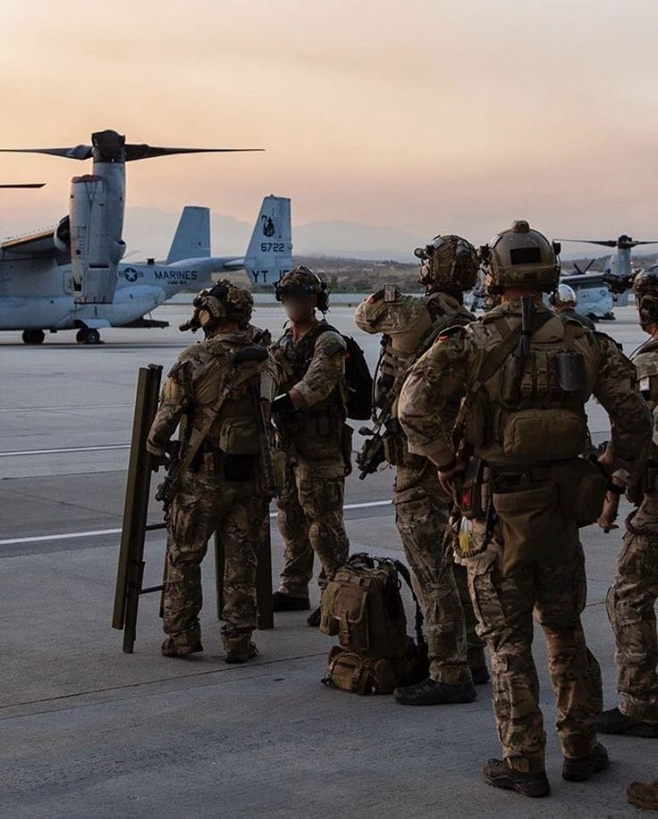

Was ist die allgemeine Dienstleistungspflicht
Dienstpflichten haben in Deutschland Personen in einem öffentlich-rechtlichen Dienstverhältnis (Beamte, Soldaten, Richter) gegenüber ihren Dienstherrn. Diese sind zu unterscheiden von den Amtspflichten, die für die Ausübung des Amtes gelten, etwa gegenüber dem Bürger.
Definition von Recht
Recht bezeichnet das System von Regeln und Normen, das durch staatliche Institutionen gesetzt und durchgesetzt wird, um das Zusammenleben der Menschen in einer Gesellschaft zu ordnen und zu regulieren. Es umfasst gesetzliche Vorschriften, Verordnungen und richterliche Entscheidungen, die das Verhalten von Individuen und Institutionen bestimmen. Recht dient dazu, Konflikte zu lösen, Gerechtigkeit zu fördern und soziale Ordnung zu gewährleisten. Es basiert auf Prinzipien wie Gleichheit, Fairness und Rechtsstaatlichkeit und wird durch formelle Institutionen wie Gerichte, Polizei und Verwaltungsbehörden sowie durch internationale Übereinkommen und Verträge durchgesetzt.
Artikel 12 Grundgesetze
(1) Männer können vom vollendeten achtzehnten Lebensjahr an zum Dienst in den Streitkräften, im Bundesgrenzschutz oder in einem Zivilschutzverband verpflichtet werden. (2) Wer aus Gewissensgründen den Kriegsdienst mit der Waffe verweigert, kann zu einem Ersatzdienst verpflichtet werden. Die Dauer des Ersatzdienstes darf die Dauer des Wehrdienstes nicht übersteigen. Das Nähere regelt ein Gesetz, das die Freiheit der Gewissensentscheidung nicht beeinträchtigen darf und auch eine Möglichkeit des Ersatzdienstes vorsehen muß, die in keinem Zusammenhang mit den Verbänden der Streitkräfte und des Bundesgrenzschutzes steht. (3) Wehrpflichtige, die nicht zu einem Dienst nach Absatz 1 oder 2 herangezogen sind, können im Verteidigungsfalle durch Gesetz oder auf Grund eines Gesetzes zu zivilen Dienstleistungen für Zwecke der Verteidigung einschließlich des Schutzes der Zivilbevölkerung in Arbeitsverhältnisse verpflichtet werden; Verpflichtungen in öffentlich-rechtliche Dienstverhältnisse sind nur zur Wahrnehmung polizeilicher Aufgaben oder solcher hoheitlichen Aufgaben der öffentlichen Verwaltung, die nur in einem öffentlich-rechtlichen Dienstverhältnis erfüllt werden können, zulässig. Arbeitsverhältnisse nach Satz 1 können bei den Streitkräften, im Bereich ihrer Versorgung sowie bei der öffentlichen Verwaltung begründet werden; Verpflichtungen in Arbeitsverhältnisse im Bereiche der Versorgung der Zivilbevölkerung sind nur zulässig, um ihren lebensnotwendigen Bedarf zu decken oder ihren Schutz sicherzustellen. (4) Kann im Verteidigungsfalle der Bedarf an zivilen Dienstleistungen im zivilen Sanitäts- und Heilwesen sowie in der ortsfesten militärischen Lazarettorganisation nicht auf freiwilliger Grundlage gedeckt werden, so können Frauen vom vollendeten achtzehnten bis zum vollendeten fünfundfünfzigsten Lebensjahr durch Gesetz oder auf Grund eines Gesetzes zu derartigen Dienstleistungen herangezogen werden. Sie dürfen auf keinen Fall zum Dienst mit der Waffe verpflichtet werden. (5) Für die Zeit vor dem Verteidigungsfalle können Verpflichtungen nach Absatz 3 nur nach Maßgabe des Artikels 80a Abs. 1 begründet werden. Zur Vorbereitung auf Dienstleistungen nach Absatz 3, für die besondere Kenntnisse oder Fertigkeiten erforderlich sind, kann durch Gesetz oder auf Grund eines Gesetzes die Teilnahme an Ausbildungsveranstaltungen zur Pflicht gemacht werden. Satz 1 findet insoweit keine Anwendung. (6) Kann im Verteidigungsfalle der Bedarf an Arbeitskräften für die in Absatz 3 Satz 2 genannten Bereiche auf freiwilliger Grundlage nicht gedeckt werden, so kann zur Sicherung dieses Bedarfs die Freiheit der Deutschen, die Ausübung eines Berufs oder den Arbeitsplatz aufzugeben, durch Gesetz oder auf Grund eines Gesetzes eingeschränkt werden. Vor Eintritt des Verteidigungsfalles gilt Absatz 5 Satz 1 entsprechend.
Video: Bundesrat einfach erklärt.
Video: Wie entsteht ein Gesetz?
Notwendige Verfassungsänderung
Um eine allgemeine Dienstpflicht in Deutschland zu ermöglichen, wäre eine Anderung des Grundgesetzes erforderlich. Insbesondere müssten die Einschränkungen bezüglich des Geschlechts aufgehoben werden, derzeit nur Manner bestimmten Dienstpflichten unterliegen können Gemäß Artikel 79 Absatz 2 GG erfordert eine Verfassungsänderung die Zustimmung.yon zwei Dritteln der Mitglieder des Bundestages und zwei Dritteln der Stimmen des Bundesrates.
Debatte und Entscheidungsfindung
Die Diskussion um eine allgemeine Dienstpflicht umfasst verschiedene Aspekte wie den Dienst an der Waffe Tätigkeiten im Katastrophen- und Zivilschutz sowie soziale Dienstleistungen. Die Einfuhrung einer solchen Dienstpflicht berührt grundlegende rechtliche Prinzipien und erfordert daher sorgfältige rechtlichem Überlegungen sowie,politische Entscheidungen.
Wirtschaftliche Auswirkungen der Dienstpflicht
Die Einführung einer Dienstpflicht, sei es im militärischen oder zivilen Bereich, bringt vielfältige wirtschaftliche Konsequenzen mit sich. Hier erfahren Sie, wie sich eine Dienstpflicht auf verschiedene Aspekte der Wirtschaft auswirkt:
- Verwaltung und Infrastruktur: Die Verwaltung und Durchführung eines Dienstpflichtsystems erfordert erhebliche staatliche Investitionen. Dazu zählen die Kosten für die Verwaltung, Ausbildung und Bereitstellung der notwendigen Infrastruktur.
- Entschädigung für Dienstleistende: Obwohl die Vergütung für Dienstleistende oft geringer ist als auf dem freien Arbeitsmarkt, müssen diese dennoch finanziell entlohnt werden, was zusätzliche Ausgaben für den Staat bedeutet.
- Verfügbarkeit von Arbeitskräften: Junge Menschen werden für die Dauer ihrer Dienstzeit dem regulären Arbeitsmarkt entzogen. Dies kann kurzfristig zu einem Mangel an jungen, qualifizierten Arbeitskräften führen.
- Produktivität und Ausbildung: Die während des Dienstes erworbenen Fähigkeiten und Erfahrungen können die zukünftige Produktivität der Dienstleistenden erhöhen und somit langfristig positive wirtschaftliche Auswirkungen haben.
- Arbeitsmarktverzerrungen: Die vorübergehende Entfernung junger Arbeitskräfte aus dem Arbeitsmarkt kann zu einem Anstieg der Löhne in bestimmten Branchen führen, die auf junge und gering qualifizierte Arbeitskräfte angewiesen sind.
- Karriereunterbrechungen: Eine Unterbrechung der beruflichen Entwicklung kann langfristig negative Auswirkungen auf die Karriere und das Einkommen der betroffenen Personen haben.
- Bildungsentscheidungen: Die Aussicht auf eine Dienstpflicht kann Bildungsentscheidungen beeinflussen. Manche entscheiden sich möglicherweise, ein Studium oder eine Ausbildung zu verschieben, um die Dienstpflicht zuerst zu erfüllen.
- Erworbene Fähigkeiten: Die während des Dienstes erworbenen Fähigkeiten können in bestimmten Berufen nützlich sein und somit die allgemeine Qualifikation der Arbeitskräfte verbessern.
- Sozialer Zusammenhalt: Eine Dienstpflicht kann den sozialen Zusammenhalt stärken und ein Gemeinschaftsgefühl fördern, was indirekt die Stabilität und den wirtschaftlichen Wohlstand des Landes erhöhen kann.
- Verringerte Arbeitslosigkeit: In Zeiten hoher Arbeitslosigkeit kann eine Dienstpflicht helfen, die Arbeitslosigkeit kurzfristig zu verringern, indem sie junge Menschen vorübergehend beschäftigt.
- Positive Effekte: Verbesserte soziale Kompetenzen, erhöhte Disziplin und ein stärkeres Gemeinschaftsgefühl können die langfristige wirtschaftliche Produktivität und Stabilität fördern.
- Negative Effekte: Potenzielle Verzögerungen in der beruflichen und akademischen Laufbahn sowie mögliche Frustrationen über erzwungene Unterbrechungen können langfristig die Motivation und Produktivität der Arbeitskräfte beeinträchtigen.
Direkte wirtschaftliche Auswirkungen
Riegierungskosten:
Arbeitskräfte:
Indirekte wirtschaftliche Auswirkungen
Arbeitsmarkt und Löhne:
Bildungs- und Ausbildungseinflüsse:
Sozialer Zusammenhalt und Staatsausgaben
Langfristige Perspektiven
Langfristig gesehen kann eine Dienstpflicht sowohl positive als auch negative Auswirkungen haben:
Quellen
- https://www.vku.de/themen/recht/
- https://pin.it/1wgZVZZCy
- https://youtu.be/y4nO9r2ApuI?si=mRDeH3rziDMyDdir
- https://youtu.be/H_qe_TqLdII?si=HewpxPQeWAXZrNP8
- https://chatgpt.com/c/1e36c03a-47d0-4783-bbfa-b80264962bb5
- https://www.gesetze-im-internet.de/gg/art_12a.html
- https://www.studysmarter.de/schule/wirtschaft/rechtslehre/definitionen-recht/
- https://www.spiegel.de/politik/deutschland/dienstpflicht-oder-wehrpflicht-die-wichtigsten-fragen-undantworten-a-1221859.html
- https://www.lto.de/recht/hintergruende/h/allgemeine-dienstpflicht-einfuehrung-verfassung-wehrpflichtzivildiens
- https://www.gesetze-im-internet.de/
Bilder:
Video und Podcast:
Texts and Infomation: